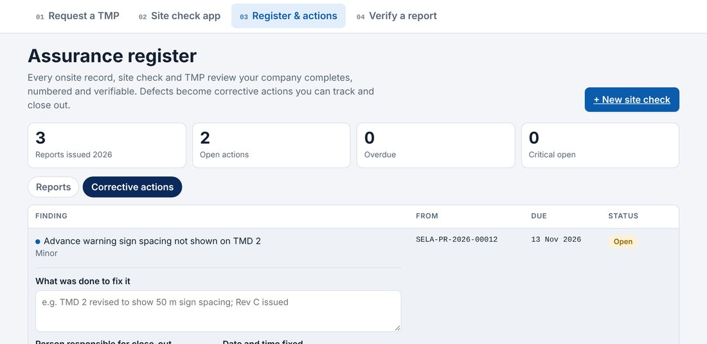

Each Critical finding becomes a critical action, due the same day. Each Non-conformance becomes a major action, due in 7 days. Observations are recorded but don’t create actions.

Open Corrective actions and select the action
Set the owner and due date, or Mark in progress
To close it, record what was done to fix it, the person responsible, the date and time it was fixed, and an evidence reference if you have one
Every change is kept in the action’s history. The original finding can’t be edited
Each critical finding becomes a critical action, due the same day. Each non-conformance becomes a major action, due in seven days. To close an action, open it, and record what was done to fix it, the person responsible, the date and time it was fixed, and an evidence reference if you have one. Every change is kept in the action's history, and the original finding can't be edited.